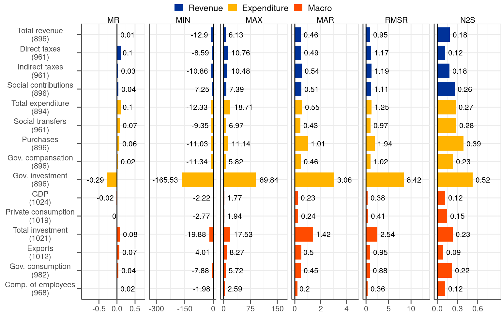

5 Properties of intermediate revisions
Intermediate revisions are changes that take place between subsequent releases, as explained in Subsection 2.2. By construction, intermediate revisions make up for final revisions (as illustrated in Figure 2.1). Analysing intermediate revisions is indispensable for understanding the dynamics between initial and final releases. As such, intermediate revisions can foster understanding of final revisions.
Intuitively, each release should bring the data closer to its final value as gradually with time more information becomes available to data compilers (see the right-hand-side chart in Figure 2.1 where most of the intermediate revisions go in the direction of the final revisions). In practice, however, it occurs that some releases go into the opposite direction and increase the distance to the final value compared to a previous release. Figure 5.1 provides an example of a data point where the initial release was closer to the final value than subsequent releases (see the case of Austria). If such cases are frequent our findings based on final revisions may considerably change (as demonstrated with a single calculation on Figure 5.1), which we verify in this section.1
1 If all intermediate revisions went towards a final value (i.e. are of the same sign as a final revision) intermediate revisions would not bring any additional information to the summary statistics calculated based on final revisions. MAR, for instance, would be just lower by a certain factor because final revisions could be divided into smaller pieces constituting intermediate revisions.
Another aspect that can be revealed by analysis of intermediate revisions is the timing of the revisions. In this context, the analysis should inform us whether the revisions mostly take place shortly after an initial release or maybe closer to the publication of a final value. In the same vein, it will be possible to identify releases within a year (i.e. Jan, Apr, Jul or Oct) when the data are subject to particular revisions, if this is the case.
5.1 Unconditional properties
Figure 5.2 contains summary statistics of intermediate revisions. Given the great relevance of the 2014Q2 split and its profound effects on the reduction in fiscal revisions, as discussed in Chapter 3, we present directly the results in the two subsamples. Similarly to Figure 3.2 for final revisions, we report a set of summary statistics.
The picture constructed on the basis of intermediate revisions is very similar to the one based on final revisions. On the bias, intermediate revisions do not bring any new information to the MR statistic compared to final revisions. The value of the metric is just lower by a constant factor compared to the one based on final revisions. This is not surprising because the change from the initial release to the final release is captured in multiple intermediate revisions rather than in one final revision. Since final revisions consist of 2, 3, 4 or 5 intermediate revisions depending on a quarter there are around 3.5 intermediate revisions per one final revision on average. This is exactly the factor by which the MR statistics based on intermediate revisions is lower compared to the one based on final revisions.2
2 The factor can deviate slightly due to missing observations.
Regarding the dispersion of intermediate revisions, even though they bring new information they paint a very similar picture compared to final revisions. The value of the MAR statistics, which we consider to be the most illustrative as a measure of dispersion, is lower compared to the final revisions. The ratio between the two is not roughly 3.5 but significantly less (i.e. slightly above 2 on average for most of the variables). This indicates that releases that bring data away from final values are relatively common in the dataset.
Notwithstanding these undesirable releases, intermediate revisions point to the same conclusions on the dispersion of the revisions like the final ones. In the pre-2014Q2 subsample fiscal revisions are approximately twice as dispersed as macro revisions, as judged by the MAR measure for the biggest and most stable categories. In the post-2014Q2 subsample the MAR measure for both types of variables fiscal and macro are not far away from each other. Volatile categories, in particular government and total investment, are associated with exceptionally high values of the statistics measuring dispersion, especially in the second subsample.

5.2 Dynamics of data releases
Another aspect on which intermediate revisions can shed light is the evolution of releases from the initial one to the final one. This will inform us about the path that intermediate data releases undertake when they converge to the final value. Such analysis should also confirm one of the findings from the previous subsection, namely the existence of incidents when intermediate releases take data away from final values compared to figures already published. Given that the number of intermediate revisions differs depending on a quarter (i.e. Q1 observations have 5 intermediate revisions while Q4 observations only 2 intermediate revisions) we look at Q1-Q4 observations separately (see Figure 5.3).
Figure 5.3 illustrates how initial releases converge towards final values. Strictly speaking, the lines in the charts demonstrate how final revisions, associated with initial releases, move during the revision cycle towards zero, which is the moment of final release. Each line represents average revisions for one variable. Since the conclusions we draw below remain valid for both pre and post-2014Q2 subsamples (see Figure C.1 and Figure C.2 for the two subsamples in the online appendix). Figure 5.3 is based on the dataset without the split.
Looking at the shapes of the lines in Figure 5.3 it becomes clear that the evolution of revisions, which bring data to final values, is different for fiscal and macro variables. For the former the most sizable data revisions take place in April and in October of the following year (see that the lines leading to Apr T+1 and Oct T+1 are the steepest of all fragments). These are the releases coinciding with EDP notifications. In April T+1 data for Q4 of year T and for the year as a whole become published for the first time. October T+1 is the second EDP notification for year T when all its quarters can be subject to changes. The release of October T+1 also defines final values in our analysis.3 By contrast, the revisions for macro variables occur much more gradually (see that the lines are less of a step-wise profile) compared to fiscal variables. This shows that macro variables are revised irrespective of the quarter. January and July releases are also associated with sizable revisions, which is not the case for fiscal variables.
3 As emphasised in Maurer and Keweloh (2017) also EDP Dialogue visits have measurable impact on deficit revisions. To the extent that they have an impact on EDP Notifications they exacerbate revisions in April and October.
Even by looking at the aggregated data single instances of lines trending upwards are visible (see Figure 5.3). This only re-affirms that cases where single releases takes us away from final values compared to a preceding release exist in the dataset. Naturally, in such cases the subsequent revisions need to be particularly large as they need to make up for any move in the ‘wrong’ direction.